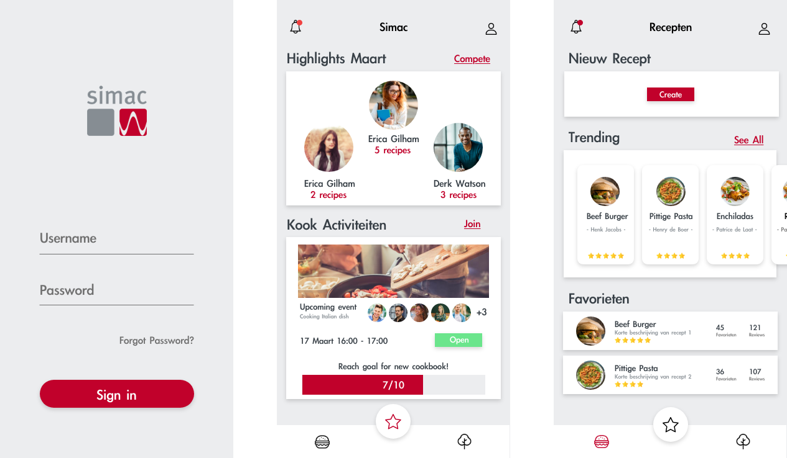
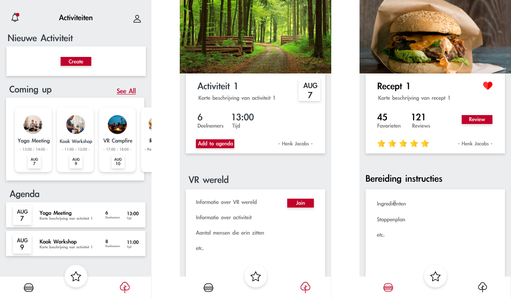

Om het concept te visualiseren hebben alle groepsleden wireframes gemaakt van het ontwerp voor de app. Deze hebben we met elkaar besproken en vervolgens zijn we ontwerpen gaan maken op basis van deze wireframes / eerste ontwerpen.
App ontwerp maken dat het concept een visuele vorm geeft


Hierboven zijn de eind ontwerpen van de app te zien die ik heb gemaakt. Hierbij heb ik gebruik gemaakt van de Apple IOS design guidelines en de huisstijl van Simac. De grootste feedback die wij vanuit Simac en de docenten kregen was dat we ons moeten onderscheiden van andere kook en evenementen apps en dat we in onze app de Simac werknemer erin moeten betrekken. Dit heb ik gedaan door op de landing pagina een counter neer te zetten van hoeveel recepten er nog nodig zijn om tot een Simac kookboek te komen en versturen naar de Simac werknemers.
Een kook en evenementen app waarin de Simac werknemers centraal staan
Ontwerp document proces